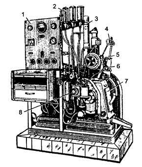
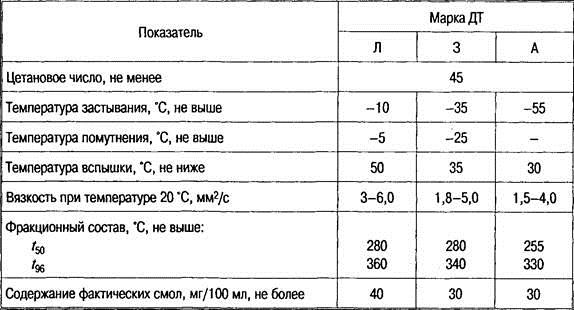
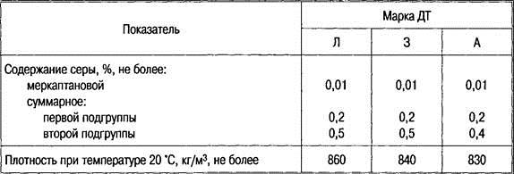
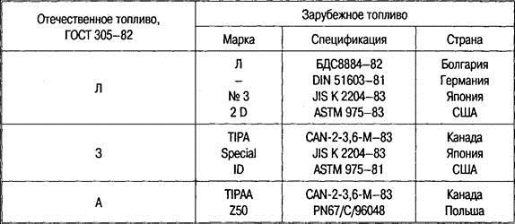

Тема 4
Дизельные топлива.
Свойства и показатели дизельных топлив, влияющие на подачу и смесеобразования
Дизельное
топливо после бензина относится к самым массовым продуктам, применяемым на
автомобильном транспорте. Дизельные двигатели по сравнению с карбюраторными
обладают лучшей топливной экономичностью, удельный расход топлива у них
примерно на 30 % ниже, чем у карбюраторных двигателей.
Дизельным топливом называется нефтяная фракция, основу которой
составляют углеводороды с температурами кипения в пределах от 200 до 350º С.
По внешнему
виду дизельное топливо представляет собой прозрачную, по сравнению с бензином
более вязкую жидкость, окрашенную имеющимися в ее составе смолами в цвета от
желтого до светло-коричневого. Дизельное топливо легче воды и практически в ней
не растворяется.
Дизельное
топливо производиться из отбензиненной нефти, благодаря чему увеличивается
выход из нефти жидких топлив.
Технико-экономические
требования к дизельным топливам.
Дизельное
топливо должно:
-
бесперебойно
поступать в цилиндры двигателя при любых температурах (сохранять подвижность до
возможно более низких температур) и обеспечивать легкий пуск двигателя:
-
обеспечивать
хорошее распыление и смесеобразование в цилиндрах двигателя;
-
легко
воспламеняться и плавно сгорать, обеспечивая мягкую и бездымную работу
двигателя;
-
быть в
необходимой степени химически стабильными;
-
обладать
минимальным коррозионным воздействием на металлы;
-
не содержать
механических примесей и воды.
Свойства и показатели
ДТ, влияющие на подачу
Вязкость
Вязкость
дизельного топлива, равно как и других жидкостей, характеризует его
подвижность, величину внутреннего трения, взаимную силу сцепления молекул. Она
может быть выражена в единицах динамической и кинематической вязкости. Для
дизельного топлива указывается кинематическая вязкость.
Динамическая
вязкость измеряется величиной внутреннего трения. Единицей динамической
вязкости является пуаз (П). динамическую вязкость в 1П имеет
такая жидкость, у которой между двумя бесконечно тонкими слоями площадью 1 см2,
находящимися друг от друга на расстоянии 1 см и перемещающимися с относительной
скоростью 1 см/с, возникает сила равная 1 дине.
Кинематическая
вязкость измеряется удельным коэффициентом внутреннего трения и представляет собой
отношение динамической вязкости жидкости к ее плотности при температуре
определения
Единицей кинематической вязкости
является стокс (Ст). Кинематическую вязкость в 1 Ст имеет
жидкость, у которой динамическая вязкость равна 1П и плотность 1 г/см3.
Сотая доля стокса называется сантистоксом (сСт).вязкость дистиллированной воды
при 20,2º С равна 1 сСт.
К основным требованиям по качеству
дизельного топлива относиться прокачиваемость его по
топливной системе, обеспечивающая подачу топлива в цилиндры двигателя в
необходимом для заданного режима количестве.
Одним из показателей, которым
оценивается прокачиваемость, является вязкость. Вязкость топлива влияет
непосредственно на процесс образования смеси. От нее зависит надежность и
ресурс топливной аппаратуры двигателя. Топливо с чрезмерно высокой вязкостью
будет оказывать значительное сопротивление при движении по трубопроводам, через
фильтры, отверстия форсунок и т.д. При использовании топлива с очень низкой
вязкостью ухудшается смазка деталей насоса высокого давления и нарушается
дозировка подачи топлива. Кроме того, при использовании топлива с малой
вязкостью дальнобойность его струи оказывается недостаточной вследствие
чрезмерного распыливания. Недостаточная вязкость приводит к неоднородности
рабочей смеси, ухудшению процесса сгорания и перегреву форсунок. Капли
высоковязкого топлива получаются крупными, с излишне большой дальнобойкостью
образующегося из них факела, что ведет к замедленному их испарению и частичному
оседанию на днище поршня, а также на стенки камеры сгорания.
Из выше сказанного следует, что топливо
для быстроходных дизельных двигателей должно обладать оптимальной вязкостью
(при 20º С) и находиться для летней эксплуатации в пределах 3,0-6,0, для зимней
1,8-6,0, для арктических условий – в пределах 1,5- 4,0 мм2/с.
Низкотемпературные
свойства
Низкотемпературные свойства жидких
углеводородных топлив зависят от группового и фракционного состава. Наихудшими
низкотемпературными свойствами обладают парафины (алканы) и ароматические
углеводороды, наилучшими — циклоалканы. Углеводороды, входящие в состав ДТ,
имеют высокую температуру кристаллизации, это, прежде всего, относится к
нормальным алканам. При понижении температуры окружающей среды эти углеводороды
видны невооруженным глазом как отдельные кристаллики.
Наивысшая температура, при которой
топливо теряет прозрачность, называется температурой помутнения. При
этом топливо не теряет свойство текучести. Значение вязкости при повышении
температуры увеличивается незначительно, однако кристаллы, проникая через
фильтр грубой очистки, образуют непроницаемую для топлива пленку на фильтре
тонкой очистки, что приводит к прекращению подачи топлива.
Следует учитывать, что температура
помутнения должна быть на 3—5 °С ниже температуры окружающей среды.
При дальнейшем охлаждении ДТ наступает
сращивание отдельных кристаллов в каркас, который пронизывает все топливо,
сковывая его. Топливо теряет текучесть.
Наивысшую температуру, при которой
топливо теряет текучесть, называют температурой застывания. Она должна
быть на 8—12 °С ниже температуры окружающей среды.
Для улучшения низкотемпературных свойств
дизельных топлив проводят их частичную депарафинизацию и добавляют специальные
присадки (депрессоры).
Температуры застывания и помутнения
определяют в специальном приборе по ГОСТ 20287—91.
Температуру застывания можно понизить
путем введения депрессорной присадки (например, АзНИИ—ЦИАТИМ-1).
Физическая
и химическая стабильность
Под воздействием внешних факторов в ДТ
протекают физические и химические процессы, основными из которых являются
испарение, загрязнение механическими примесями и водой, выпадение высокоплавких
компонентов при охлаждении, окисление, разложение, конденсация.
При перекачке топлива происходит испарение
легких фракций, что приводит к ухудшению его пусковых свойств. При хранении,
транспортировке, заправке топливо вступает в контакт с воздухом, который
содержит влагу. Поэтому в ДТ вводят антикристаллизационные присадки. Окисление
ДТ увеличивает содержание фактических смол. В зимних марках их должно быть не
более 30 мг на 100 мл топлива, а в летних — не более 40 мг.
Механические примеси и вода в дизельных
топливах.
Дизельное топливо, как и бензины, не
должно содержать механических примесей и воды.
При положительных температурах вода с
топливом образует эмульсию, разрушающую фильтрующие элементы фильтров тонкой
очистки, а при отрицательных температурах вода превращается в кристаллы льда,
которые закупоривают топливные фильтры.
Содержание воды в нефтепродуктах, равное
0,025 %, принято называть следами. Такое количество воды допустимо только в
летних дизельных топливах, которые разрешается применять в период с 1 мая по 1
октября.
Механические примеси могут попасть в
дизельное топливо при его хранении, транспортировании и заправке автомобиля.
Наибольший вред механические примеси наносят плунжерной паре насоса высокого
давления, а так же форсунке. Механические примеси засоряют топливные фильтры, в
результате чего затрудняется подача топлива.
Свойства
и показатели ДТ, влияющие на смесеобразование
Топливо в цилиндры двигателя подается в
жидкой фазе. С момента введения в цилиндр первой порции топлива начинается
подготовка этой и последующих порций к сгоранию, на что требуется определенное
время (t1), называемое периодом
задержки самовоспламенения (период задержки самовоспламенения складывается из
времени, затрачиваемого на распад топливной струи на капли, частичное их
испарение и смешивание паров топлива с воздухом, а также времени, необходимого
для завершения предпламенной реакции и формирования очагов самовоспламенения).
Если величина периода задержки укладывается в определенные пределы, то в работе
дизеля не происходит недопустимых отклонений от нормы. Следствием увеличения
задержки самовоспламенения (t2) является очень интенсивное
тепловыделение на первой стадии горения, в результате чего создается очень
высокая скорость нарастания давления. Если при этом темп повышения давления
превзойдет 0,6 МПа на один градус поворота коленчатого вала, то возникает
ненормальная, а так называемая жесткая работа дизеля. При жесткой работе
дизельного двигателя его детали работают с перегрузкой, что приводит к
ускоренному их износу и поломкам, перерасходу топлива, дымному выпуску и
снижению мощности.
Период задержки самовоспламенения
складывается из времени, затрачиваемого на распад топливной струи на капли,
частичное их испарение и смешивание паров топлива с воздухом, а также времени,
необходимого для завершения предпламенной реакции и формирования очагов
самовоспламенения.
Испаряемость
Чем выше испаряемость топлива, тем
качественнее проходит смешивание его с воздухом, а значит и его сгорание. До
конца может сгореть только полностью испарившееся топливо. Если же топливо
находится в капельно-жидком состоянии, то в процессе горения участвует только
оболочка капель. Ядро же под воздействием высокой температуры превращается в
сажу и выбрасывается с отработавшими газами, загрязняя окружающую среду.
Испаряемость ДТ зависит также и от
конструктивных особенностей дизеля. Форма камеры сгорания, конструкция и размер
сопловых отверстий форсунок, а также давление и направление впрыска топлива —
факторы, которые влияют на оптимальное перемешивание топлива с воздухом, а
значит и испаряемость. Вязкость, плотность, фракционный состав, давление насыщенных
паров, поверхностное натяжение имеют такое же значение для испаряемости
дизельного топлива, как и у бензинов.
Испаряемость ДТ оценивается его
фракционным составом, т. е. температурами t10, t50, t96,
tНР и tКР. ГОСТ устанавливает лишь t50 и
t96. В зависимости от марки ДТ t50 колеблется от 255
до 280 °С; a t96 — от 330 до 360 °С.
При плохой испаряемости ДТ возникают
затруднения при пуске двигателя, ухудшается его экономичность и увеличивается
дымность отработавших газов. Однако топливо с высокой испаряемостью имеет
худшую самовоспламеняемость.
Плотность
и поверхностное натяжение
На процесс смесеобразования значительное
влияние оказывают плотность и поверхностное натяжение ДТ. Плотность ДТ 830—860
кг/м3. В дизеле повышение плотности топлива, например при понижении
температуры, вызывает увеличение расхода топлива по массе при его объемном
дозировании. Кроме того, это повышает максимальное давление в трубопроводах
системы питания. В итоге увеличение плотности дизельного топлива приводит к
некоторому обогащению рабочей смеси.
Плотность и поверхностное натяжение
наряду с вязкостью оказывают влияние на качество распыления топлива. Чем более
мелкую структуру капель будет иметь распыляемый факел топлива из форсунки, тем
быстрее произойдёт переход его в парообразное состояние.
Свойства и показатели
ДТ, влияющие на самовоспламенение и процесс сгорания
Воспламенение ДТ, как и любого другого
вида топлива, зависит от температуры в очаге возгорания. Температура
самовоспламенения ДТ определяется его химическим составом.
Цетановое
число
Способность ДТ самовоспламеняться
оценивают цетановым числом (ЦЧ). Метод оценки самовоспламеняемости топлив для
быстроходных дизелей аналогичен методу оценки детонационной стойкости бензинов.
В качестве эталонных топлив для определения самовоспламеняемости выбирают два
углеводорода: цетан С16Н34 и альфаметилнафталин С10Н7СН3.
Самовоспламеняемость первого углеводорода условно принята за 100, второго — за
0. Смешивая их можно получить смесь с самовоспламеняемостью от 0 до 100. Таким
образом, цетановым числом называется условный показатель, численно равный
процентному содержанию цетана в такой его смеси с альфаметилнафталином, которая
по самовоспламеняемости соответствует испытуемому образцу.
Цетановое число ДТ определяют методом
совпадения вспышек (рис. 1).
Для безотказной работы современных
двигателей требуется топливо с цетановым числом летом — не менее 45, зимой —
50. При цетановом числе ниже 45 дизели работают жестко, особенно зимой, а выше
45 — мягко. Однако использовать топлива с цетановым числом выше 60
нерентабельно, так как жесткость работы при этом изменяется незначительно, а
удельный расход топлива возрастает. Последнее объясняется тем, что при
повышении ЦЧ свыше 55 период задержки воспламенения (время с момента начала
подачи топлива в цилиндр двигателя до начала горения) настолько мал, что
топливо воспламеняется вблизи форсунки, и воздух, находящийся дальше от места
впрыска почти не участвует в процессе сгорания. В результате топливо сгорает не
полностью, снижается экономичность двигателя.

Рис. 1 Установка ИТ9-3 для
определения цетановых чисел ДТ:
1
— пульт управления; 2 — топливные бачки; 3 — подогреватель воздуха;
4
— зеркало для наблюдения за вспышками; 5 — механизм изменения степени сжатия; 6
— форсунка; 7 — одноцилиндровый двигатель; 8 — насос высокого давления
ДТ не всегда обеспечивают необходимую
самовоспламеняемость, поэтому возникает необходимость в повышении цетанового
числа. Существуют два основных метода: изменение химического состава и введение
специальных присадок.
Что касается надежности холодного пуска
двигателя при различных температурах окружающей среды, то он в большей степени
зависит от конструкции двигателя и режима пуска, чем от ЦЧ топлива. При
температуре в камере сгорания ниже 350—400 °С горючая смесь уже не будет в
состоянии воспламеняться. Минимальная пусковая частота вращения коленчатого
вала дизеля должна быть 100—120 мин-1. И чем выше пусковая частота,
тем выше температура сжимаемого воздуха, а значит и условия пуска двигателя.
Цетановое число зависит от содержания и
строения углеводородов, входящих в состав ДТ. Цетановые числа алканов — самые
высокие, самые низкие числа имеют ароматические углеводороды. Углеводороды,
входящие в состав ДТ, по ЦЧ располагаются следующим образом: 1 — алканы, 2 —
циклоалканы, 3 — изоалканы, 4 — ароматические углеводороды. Увеличение числа
углеродных атомов в молекулах углеводородов приводит к увеличению цетанового
числа.
Таким образом, повышение содержания
н-алканов приводит к увеличению ЦЧ. Однако н-алканы имеют высокую температуру
кристаллизации, что приводит к ухудшению низкотемпературных свойств ДТ.
Введение в ДТ специальных
кислородсодержащих присадок способствует легкому выделению активного кислорода.
К таким присадкам относятся органические перекиси, сложные эфиры азотной
кислоты, которые, попадая в камеру сгорания, ускоряют образование перекисей, от
разложения которой ускоряется процесс самовоспламенения. Так, добавление 1 %
изопропилнитрата повышает ЦЧ на 10—12 единиц и улучшает пусковые свойства ДТ в
зимнее время.
Существует эмпирическая зависимость
цетанового числа топлива от его октанового числа.
ЦЧ = 60 - ОЧ / 2,
где
ЦЧ — цетановое число; ОЧ — октановое число.
Чем выше октановое число, тем ниже его
цетановое число и наоборот. Поэтому добавление в дизельное топливо бензиновых
фракций всегда ведет к снижению его цетанового числа.
Свойства и показатели ДТ, влияющие на
образование отложений
Коррозионные свойства ДТ, как и
бензинов, зависят от содержания в них серы, сернистых и кислотных соединений.
Наиболее агрессивной является так называемая активная сера (элементарная сера,
сероводород и меркаптаны).
Присутствие в ДТ таких активных
сернистых соединений, как меркаптанов, резко увеличивает износ плунжерных пар
топливных насосов высокого давления и игл распылителей форсунок. Поэтому содержание
меркаптановой серы в ДТ должно быть не более 0,01 %.
Гораздо сложнее обстоит дело с газовой
коррозией, которая получается в результате образования при высокой температуре
в камере сгорания сернистого ангидрида, вступающего при охлаждении в реакцию с парами
воды и образующего серную кислоту. Для нейтрализации вредного воздействия
кислот в ДТ вводят противокоррозионные присадки.
ДТ с суммарным содержанием неактивных
сернистых соединений не более 0,2 % не вызывают осложнения в работе двигателя и
могут применяться без ограничения. В настоящее время большинство нефтепродуктов
производят из сернистых нефтей и содержание неактивной серы достигает 0,5 %.
ДТ по содержанию неактивной серы делятся
на две подгруппы. В топливах первой подгруппы серы должно быть не более 0,2 %.
В топливах второй подгруппы для летних и зимних марок от 0,21 до 0,5 %, для
арктических — от 0,21 до 0,4 %.
Содержание сернистых соединений
настолько важный параметр, что его отражают в марке ДТ.
Кислотность характеризует содержание в
ДТ кислых соединений. ДТ должны оказывать минимальное коррозионное воздействие
на металлы, т. е. не содержать минеральных кислот и щелочей; содержание
органических кислот огранивается до 5 мг КОН на 100 мл топлива.
Содержание фактических смол в ДТ
характеризует его склонность к нагару. Способность ДТ к осмолению зависит от
наличия в нем непредельных углеводородов. О количестве последних судят по
йодному числу. Йодное число численно равно количеству граммов йода,
присоединившихся к непредельным углеводородам, которые содержатся в 100 г
топлива. Непредельные углеводороды вступают в соединение с йодом, и чем их
больше в топливе, тем больше йода вступает в реакцию. Содержание смолистых
веществ в дизельных топливах оценивается, так же как и в бензинах, определением
содержания фактических смол. С повышением содержания фактических смол в
дизельном топливе склонность к нагарообразованию возрастает. Одно из требований
к качеству дизельного топлива — содержание фактических смол не должно превышать
36—60 мг на 100 мл.
Содержание серы в топливе также влияет
на образование отложений. Чем выше ее содержание в топливе, тем больше нагара и
лака образуется при его сгорании. Сернистые соединения, накапливаясь в нагаре,
повышают его плотность. Склонность к нагарообразованию возрастает при
увеличении содержания в дизельном топливе ароматических углеводородов.
Нагарообразование и отложения на деталях
двигателя зависят от коксуемости топлива и содержания в нем золы.
Коксуемость определяется процентным
соотношением количества образовавшегося твердого остатка (кокса) после
коксования навески топлива в специальном приборе.
Зольность топлива характеризует
содержание в нем несгораемых примесей. Содержание золы повышает
нагарообразование. Попадая в масло, зола вызывает ускоренный износ деталей. Допустимое
содержание золы в дизельном топливе 0,01—0,02 %.
Марки дизельных топлив
Для эксплуатации автомобилей
используются ДТ трех марок: Л (летнее), З (зимнее), А (арктическое). Все марки
могут применяться для любого автомобильного дизеля. Выбор той или иной марки
зависит только от климатических условий и низкотемпературного показателя
топлива.
По марке ДТ можно определить содержание
неактивных сернистых соединений и температуру вспышки или застывания. Например,
марка ДТ Л — 0,11 — 58 ГОСТ 305 — 82 свидетельствует о принадлежности данного
топлива к первой подгруппе с температурой вспышки 58 °С; марка 3—0,2 минус 45
ГОСТ 305—82 — о зимнем топливе, содержании 0,2 % сернистых соединений,
температуре застывания не выше минус 45 °С.
Все компоненты дизельных топлив обладают
высокой стабильностью, поэтому для всех марок установлен гарантийный срок
хранения в 5 лет. По общему содержанию серы каждая марка делится на две
подгруппы. Общее содержание серы в процентах обязательно указывается в
маркировке. В условное обозначение топлива марки А должны входить значение
массовой доли серы и температура вспышки (Температура вспышки ограничивает
содержание в топливе наиболее легких фракций и характеризует его
огнеопасность. Температура вспышки - это та наименьшая
температура, до которой нужно нагреть дизельное топливо в закрытом тигле, чтобы
его пары образовали с воздухом смесь, вспыхивающую при поднесении к ней
пламени.), например Л-0,2-40; топливо марки З – массовая доля серы и
температура застывания, например З-0,2-35; топливо марки А – массовая доля
серы.
Важно помнить, что ДТ второй подгруппы
можно применять только при использовании для смазывания двигателя масла,
содержащего многофункциональные присадки (ВНИИНП-370, ВНИИНП-360 и др.),
обладающие моющими свойствами и нейтрализующие серный и сернистый газы. В
противном случае повышается износ деталей двигателя в 1,5—3 раза.
Для уменьшения вредного влияния
сернистого топлива необходимо поддерживать нормальный тепловой режим двигателя,
т. е. не снижать температуру, чтобы избежать конденсации влаги, и чаще менять
фильтрующие элементы масляных фильтров и масло в картере двигателя.
Основные показатели ДТ приведены в табл.
1
Таблица 1. Основные показатели дизельных
топлив


Для холодной климатической зоны топливо
марки «З» имеет температуру застывания не выше —45 °С и температуру помутнения
— не выше —35 °С.
В табл. 2 показано соответствие марок ДТ
российского и зарубежного производства.
Таблица 2. Соответствие марок ДТ
российского и зарубежного производства

Установлены две марки дизельного летнего
экологически чистого топлива:
ДЛЭЧ-В – с ограниченным содержанием
ароматических углеводородов (один вид топлива с массовой долей серы не более
0,05 %, другой - не более 0, 1 %);
ДЛЭЧ – без ограничения содержания
ароматических углеводородов (один вид топлива с массовой долей серы не более
0,05 %, другой - не более 0, 1 %).
ДЛЭЧ-В и ДЛЭЧ применяют при температуре
окружающего воздуха до -5º С.
Для использования в районах Крайнего
Севера и Арктики вырабатывается арктическое экологически чистое дизельное
топливо (ТУ 38.401.5845-92), которое имеет температуру застывания -55º С и
содержит ограниченное количество ароматических углеводородов (5-10 %).
Для эксплуатации техники в зимний период
при температуре до -15º С вырабатываются дизельные зимние топлива с
депрессорной присадкой ДЗп (ТУ 38.101.889-81), которые изготавливаются на
основе летних дизельных топлив с содержанием серы 0,2 или 0,5 %. Дизельное
топливо ДЗп-15/25 рекомендовано для применения при температуре наружного
воздуха до -25º С.
На экспорт вырабатывается дизельное
топливо ДЛЭ и ДЗЭ (ТУ 38.001.162-85) с содержанием серы 0,2 %.
В районах газовых месторождений Западной
Сибири и Крайнего Севера допущены к применению газоконденсатные широкофракционные
летнее (ГШЛ), зимнее (ГШЗ) и арктическое (ГША) дизельные топлива.
Контрольные вопросы
1. Какие предъявляются требования к ДТ?
2. Расскажите о свойствах и параметрах
ДТ, влияющих на подачу.
3. Расскажите о свойствах и параметрах
ДТ, влияющих на смесеобразование.
4. Как оценивается способность ДТ к
самовоспламенению?
5. Расскажите о способах повышения
цетанового числа.
6. Расскажите о причинах отложений.
7. Что входит в маркировку ДТ?